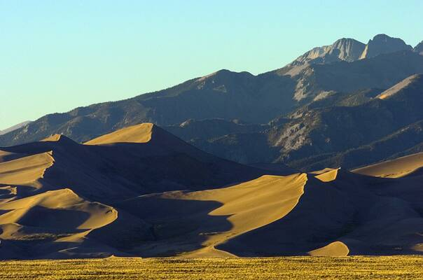

San Luis Valley
Colorado

Known for frequent sighting reports and cattle mutilation claims. Home of a roadside UFO watchtower. 1
Open in the interactive Watcher
Sources
- UFO Watchtower Wikipedia
Colorado

Known for frequent sighting reports and cattle mutilation claims. Home of a roadside UFO watchtower. 1
Open in the interactive Watcher